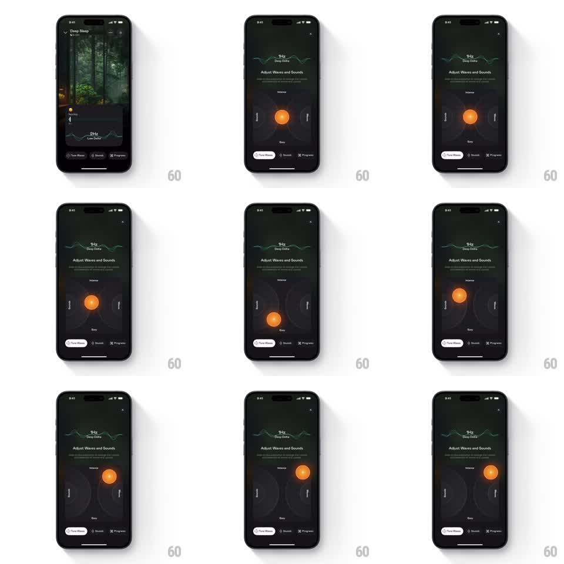

Media
Frame-by-frame

Rebuild this interaction 1:1: a sleep sound app's "Adjust Waves and Sounds" control - a 2D coordinate pad where dragging a glowing orange orb morphs the wave visualizer at top and warps the pad's background grid lines in real time.

Rebuild this interaction 1:1: a sleep sound app's "Adjust Waves and Sounds" control - a 2D coordinate pad where dragging a glowing orange orb morphs the wave visualizer at top and warps the pad's background grid lines in real time.
## Integration
Integration: stack-agnostic spec - springs given as stiffness/damping, timed motions as duration + curve; map every value to your framework and animation library of choice.
## Scene
Dark sound-tuning sheet: header ("1Hz Deep Delta" with a live waveform sketch), title "Adjust Waves and Sounds" with explainer copy, the pad (a square field with faint curved grid lines, axis labels "Intense" top / "Easy" bottom / "Focused" left / "Ambient" right), a glowing orange orb handle, bottom tabs (Tune Waves, Sounds, Programs).
## Motion spec
Pattern: 2D pad controller with reactive scene, continuous.
- The orb drags 1:1 with the finger anywhere inside the pad, clamped to the pad bounds with a soft rubber-band at edges.
- Grid lines warp toward the orb: each line's control points ease toward the orb position with a falloff radius (~40% of pad width), updated every frame.
- The header waveform morphs with the orb's coordinates: amplitude follows Y, frequency/texture follows X (continuous interpolation, no steps).
- On release, the orb stays where dropped (no snap-back); grid and waveform hold their warped state.
- Axis labels brighten toward the quadrant the orb occupies (opacity 0.4 -> 1 by proximity).
## Calibration
- The grid warp is eased, not rigid: lines near the orb bend hard, far lines barely move.
- The orb has a soft glow halo that scales up ~20% while touched - the only "pressed" feedback.
## Reduced motion
Orb drags without grid warping; waveform updates on release instead of per frame.
## Don't miss
- The mapping is continuous and bidirectional-looking: orb position, grid, and waveform must always agree - any lag between them breaks the "you're shaping the sound" illusion.
- The orb never leaves the pad; no fling, no momentum - this is a precise instrument, not a game.